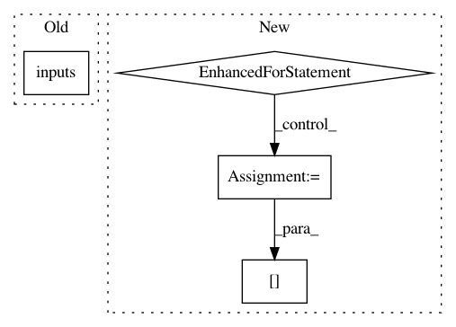

5d2a59fd4cf708d285d0db8ff3522c9156d2c4a9,src/sdk/pynni/nni/_graph_utils.py,TorchModuleGraph,unpack_manually,#TorchModuleGraph#,538
Before Change
_logger.debug("List/Tuple Construct Node(cpp) %s", str(last_cpp))
_logger.debug("List/Tuple Unpack Node(cpp) %s", str(unpack_cpp))
assert len(list(unpack_cpp.outputs())) == len(list(last_cpp.inputs()))
for _input, _output in zip(last_cpp.inputs(), unpack_cpp.outputs()):
_debug_input = _input.debugName()
_debug_output = _output.debugName()
if _debug_input in self.input_to_node and _debug_output in self.input_to_node:
After Change
// just remove the _debug_output from the grapgh index. So that we can also skip
// the construct and tuple
if _debug_output in self.input_to_node:
for following_node in self.input_to_node[_debug_output]:
_tmp_index = following_node.inputs.index(_debug_output)
following_node.inputs[_tmp_index] = _debug_input
self.unpacked = True
def _build_graph(self):
In pattern: SUPERPATTERN
Frequency: 3
Non-data size: 4
Instances
Project Name: Microsoft/nni
Commit Name: 5d2a59fd4cf708d285d0db8ff3522c9156d2c4a9
Time: 2020-08-12
Author: 49771382+zheng-ningxin@users.noreply.github.com
File Name: src/sdk/pynni/nni/_graph_utils.py
Class Name: TorchModuleGraph
Method Name: unpack_manually
Project Name: lanpa/tensorboardX
Commit Name: 5619f0a742cfee882b51b6798215362e227c2732
Time: 2018-04-28
Author: huang.dexter@gmail.com
File Name: tensorboardX/graph.py
Class Name:
Method Name: parse
Project Name: Microsoft/nni
Commit Name: f7b7edac5b9e329ffdda30d710f68db71d08e065
Time: 2020-11-22
Author: 38930155+chicm-ms@users.noreply.github.com
File Name: nni/common/graph_utils.py
Class Name: TorchModuleGraph
Method Name: _build_graph